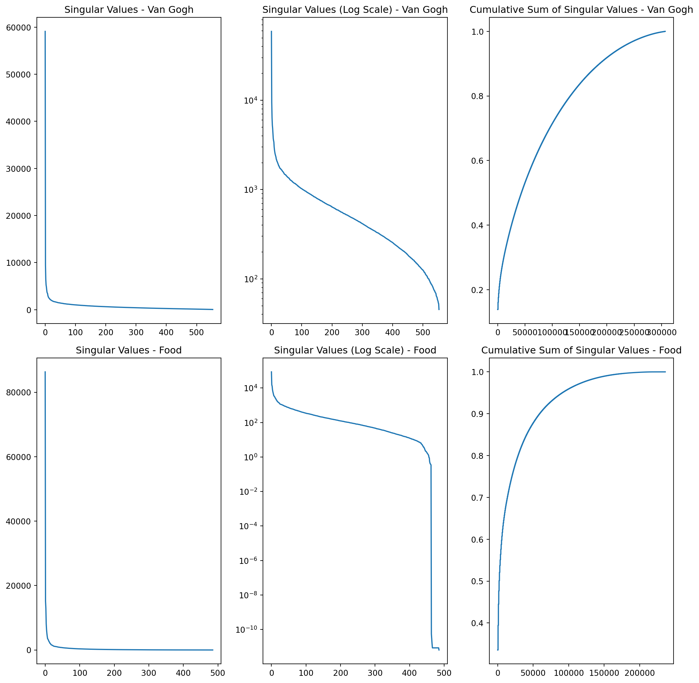

Code
import sympy as sp
from sympy.plotting import plot3d
from PIL import Image
import numpy as np
import matplotlib.pyplot as pltimport sympy as sp
from sympy.plotting import plot3d
from PIL import Image
import numpy as np
import matplotlib.pyplot as pltWe first must change the quadratic form into a matrix form. We can do this by creating a matrix A that satisifies \(Q = x^T*A*x\).
# Q's associated symmetric matrix
A = sp.Matrix([[2, -2, -1], [-2, 4, 1], [-1, 1, 6]])
display(A)
# sympy vector with symbols x, y, z
x = sp.Matrix(sp.symbols('x y z'))
# quadratic form
Q = x.T * A * x
display("checking: ",Q[0].simplify())\(\displaystyle \left[\begin{matrix}2 & -2 & -1\\-2 & 4 & 1\\-1 & 1 & 6\end{matrix}\right]\)
'checking: '\(\displaystyle 2 x^{2} - 4 x y - 2 x z + 4 y^{2} + 2 y z + 6 z^{2}\)
Now we want \(A' = (A+A^T)/2\). We’re checking A’ = A. It is and this makes sense since A is symmetric so it’s basically \(2A/2 = A\).
# A'
A_prime = (A + A.T)/2
display("checking A' is equal to A:", A_prime == A)"checking A' is equal to A:"TrueNow we diagonize A’. Shown below is the diagonal matrix with the eigenvalues (D) and the corresponding eigenvectors (P).
# diagonize A'
display(A_prime)
P, D = A_prime.diagonalize()
P = P.evalf(3, chop = True)
D = D.evalf(3, chop = True)
display(P)
display(D)\(\displaystyle \left[\begin{matrix}2 & -2 & -1\\-2 & 4 & 1\\-1 & 1 & 6\end{matrix}\right]\)
\(\displaystyle \left[\begin{matrix}0.619 & -0.441 & 12.8\\-1.18 & 0.616 & 7.56\\1.0 & 1.0 & 1.0\end{matrix}\right]\)
\(\displaystyle \left[\begin{matrix}4.2 & 0 & 0\\0 & 7.06 & 0\\0 & 0 & 0.742\end{matrix}\right]\)
Next, we make a linear change of variables satisfying \(x = Px'\) and we check that x’ returns back Q
x_prime = P.inv() * x
Q_prime = x_prime.T * P.T * A_prime * P * x_prime
# back to quadratic form
Q_prime = Q_prime[0].simplify()
print("check: ", Q_prime)check: 2.0*x**2 - 4.0*x*y - 2.0*x*z + 4.0*y**2 + 2.0*y*z + 6.0*z**2The diagonal matrix \(D\) or equivalently, \(P^TAP\) is the matrix without the mixed terms.
# w/o mixed terms
B = (P.T*A_prime*P).evalf(chop = True)
B = B.applyfunc(lambda x: round(x, 2))
print("matrix without the mixed terms: ")
display(B)
# function R where B is the symmetric matrix
R = x.T * B * x
R = R[0].simplify()
display(R)matrix without the mixed terms: \(\displaystyle \left[\begin{matrix}11.66 & 0 & 0.01\\0 & 11.11 & 0\\0 & 0 & 165.22\end{matrix}\right]\)
\(\displaystyle 11.66 x^{2} + 11.11 y^{2} + z \left(0.01 x + 165.22 z\right)\)
This shows that the standard form is of a ellipse so the original matrix would be of a rotated ellipse.
x, y, z = sp.symbols('x y z')
# solving the equation for z in terms of x and y
equation = sp.Eq(R, 1)
equation = sp.solve(equation, z)
positive_sol = equation[1]
negative_sol = equation[0]
# plotting the two expressions
plot = plot3d(positive_sol, negative_sol, (x, -0.3, 0.3), (y, -0.3, 0.3), xlabel='x', ylabel='y', title='Standard Form of Ellipse')
I’ll use Van Gogh’s Starry Night again, shown below.
fname = 'image.png'
image = Image.open(fname).convert('L')
arr = np.asarray(image)
plt.imshow(arr, cmap='gray', aspect = 'auto')
plt.show()I perform SVD on the image and first show the plot of the singular values. It seems that there is a strong dip after the first 20 singular values. I saw a cumulative sum plot when doing my resarch and I thought it would be interesting to include that as well. It shows the proportion of the first x singular values for the total sum of singular values.
U, S, Vt = np.linalg.svd(arr, full_matrices=False)
# Combine three plots using subplots
fig, axs = plt.subplots(3, 1, figsize=(8, 12))
# Plot 1: Singular values
axs[0].plot(S)
axs[0].set_title('Singular Values')
# Plot 2: Singular values on a log scale
axs[1].plot(S)
axs[1].set_yscale('log')
axs[1].set_title('Singular Values (Log Scale)')
# Plot 3: Cumulative sum of singular values
axs[2].plot(np.cumsum(np.diag(S))/np.sum(np.diag(S)))
axs[2].set_title('Cumulative Sum of Singular Values')
# Adjust spacing between subplots
plt.tight_layout()
# Show the combined plot
plt.show()I also emulated your work in the lecture notes and extended the column vector for U and the row vector for V.
# extend the first column of u to a 2D array
first_column = U[:, 0]
first_column = first_column[:, np.newaxis]
# do the same for v but with the first row
first_row = Vt[0, :]
first_row = first_row[np.newaxis, :]
# plot
fig, axs = plt.subplots(2, 1, figsize=(8, 8))
# Plot 1: First column
axs[0].imshow(first_column, aspect='auto')
axs[0].set_title('First Column')
# Plot 2: First row
axs[1].imshow(first_row, aspect='auto')
axs[1].set_title('First Row')
plt.tight_layout()
plt.show()Here, I have plots of different reconstructed SVD images with different number of components. As suggested earlier, 20 components seem to capture a good portion of the image. To be exact, the cumulative sum of the first 20 singular values is 29.7%. We can also see that the difference between 50 components and the actual image is minimal.
from sklearn.decomposition import PCA
# Define the number of components
n_components = [1, 5, 10, 20, 50, len(S)]
# Create subplots
fig, axs = plt.subplots(3, 2, figsize=(12, 12))
# Perform PCA and reconstruct the image for each number of components
for i, n in enumerate(n_components):
# Perform PCA
pca = PCA(n_components=n)
components = pca.fit_transform(arr)
reconstructed = pca.inverse_transform(components)
# Plot the reconstructed image
axs[i//2, i%2].imshow(reconstructed, cmap='gray', aspect='auto')
axs[i//2, i%2].set_title(f'{n} Components')
# Adjust spacing between subplots
plt.tight_layout()
# Show the combined plot
plt.show()I think that because this is a painting done in a post-impressionism style, the edges are way less defined than in real life. For comparison, I’ll use an image of a dog bread I want.
One can easily see how the cumalative sum for the dog image rises a lot quicker than Van Gogh’s painting which is probably becuase of it’s more defined edges.
fname2 = 'image2.png'
image2 = Image.open(fname2).convert('L')
arr2 = np.asarray(image2)
plt.imshow(arr2, cmap='gray', aspect='auto')
plt.show()
U2, S2, Vt2 = np.linalg.svd(arr2, full_matrices=False)
fig, axs = plt.subplots(2, 3, figsize=(12, 12))
# Plot 1: Singular values of the first image
axs[0, 0].plot(S)
axs[0, 0].set_title('Singular Values - Van Gogh')
# Plot 2: Singular values on a log scale of the first image
axs[0, 1].plot(S)
axs[0, 1].set_yscale('log')
axs[0, 1].set_title('Singular Values (Log Scale) - Van Gogh')
# Plot 3: Singular values of the second image
axs[1, 0].plot(S2)
axs[1, 0].set_title('Singular Values - Food')
# Plot 4: Singular values on a log scale of the second image
axs[1, 1].plot(S2)
axs[1, 1].set_yscale('log')
axs[1, 1].set_title('Singular Values (Log Scale) - Food')
# Plot 5: Cumulative sum of singular values of the first image
axs[0, 2].plot(np.cumsum(np.diag(S))/np.sum(np.diag(S)))
axs[0, 2].set_title('Cumulative Sum of Singular Values - Van Gogh')
# Plot 6: Cumulative sum of singular values of the second image
axs[1, 2].plot(np.cumsum(np.diag(S2))/np.sum(np.diag(S2)))
axs[1, 2].set_title('Cumulative Sum of Singular Values - Food')
plt.tight_layout()
plt.show()
Here, I show SVD with 10 components and gives us a cumulative sum of 65.8% which could be explained by how the original image’s background is blurry, which helps accuracy for SVD. This offsets how the dog still isn’t in clear focus.
# Define the number of components for the second image
n_components2 = [10, len(S2)]
# Create subplots
fig, axs = plt.subplots(1, 2, figsize=(18, 9))
# Perform PCA and reconstruct the image for each number of components
for i, n in enumerate(n_components2):
# Perform PCA
pca2 = PCA(n_components=n)
components2 = pca2.fit_transform(arr2)
reconstructed2 = pca2.inverse_transform(components2)
# Plot the reconstructed image
axs[i].imshow(reconstructed2, cmap='gray', aspect='auto')
axs[i].set_title(f'{n} Components')
# Adjust spacing between subplots
plt.tight_layout()
# Show the combined plot
plt.show()